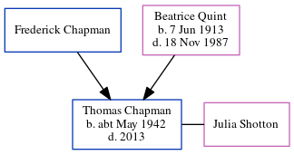

Thomas W Chapman cMay 1942 - 2013
[ Home ] | [ Calendar ] | [ Surnames Index ] | [ Census Index ] | [ Family History ]The child of Frederick Chapman and Beatrice Quint, Thomas Chapman, the fourth cousin on the father's side of Nigel Horne, was born in Dover, Kent, England c. May 19421. He married Julia Shotton in Dover around Nov 19652.
He died in 2013.
Parents
- Beatrice May was born on Jun 7, 1913
Citations
- England & Wales births 1837-2006 - Findmypast
- England & Wales Marriages 1837-2005 - Findmypast
Media
England & Wales births 1837-2006 - BMD/B/1942/2/AZ/000205/125
England & Wales Marriages 1837-2005 - BMD/M/1965/4/AZ/000177/055
Family Tree
Generated by ged2site. Last updated on Jun 11, 2024